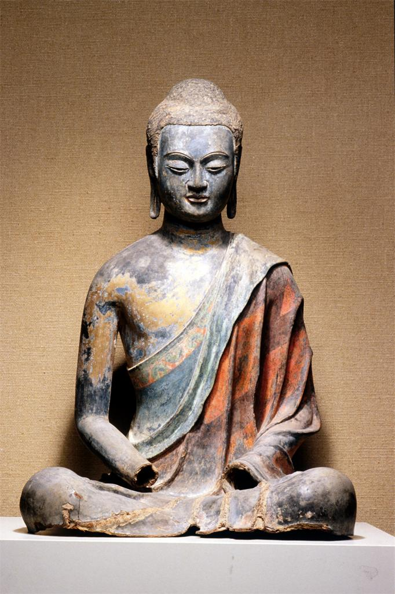

|  | Quick Facts
Found in a cave Some year |
|---|
This seated buddha made from wood and coated with dry lacquer and blue paint sits 96.4 cm tall, quite a large wooden sculpture. Unfortunately, his hands have been damaged up until his wrists, so the actual orientation cannot be determined. His robe does not cover his whole body, and his upper left torso is exposed. The robe also have two layers. The outer layer has wide stripes of red, while the inner layer has a border with circles on a background of blue.
Buddha here is either wearing a headdress or has his hair bundled up. His eyes are wide but narrow, and are pointing down. His limbs are relatively skinny compared to his body, which is slightly heftier. There are “traces of gilding,” which can be seen on the Buddha’s right arm and torso. These patches can remind a viewer of how the sculpture might have looked in the Tang Dynasty.